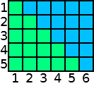
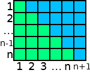

Wskazówka I

Na rysunku widnieje prostokąt o wymiarach 5x6 kratek. Zauważ, że zielone,
jaki i niebieskie, pola zajmują 1+2+3+4+5 kratek (czyli to nasza szukana suma dla n=5).
Skoro zielone pole zajmuje połowę pola powierzchni
(pole powierzchni prostokąta to iloczyn dwóch przyległych boków),
to znaczy że nasza suma dla n=5 wynosi (5*6)/2.
Wskazówka II

W poprzedniej wskazówce skupiliśmy się na n=5,
jednak taki prostokąt można narysować dla każdego n.
Wówczas zielone pole będzie wynosiło: 1+2+...+(n-1)+n
(czyli, dokładnie tyle ile nasza suma Sn).
Jak wiadomo zielone pole zajmuje połowę pola powierzchni (pole powierzchni to (n+1)*n), czyli
Sn = 1/2 * ( (n+1) * n)
Pseudokod algorytmu
|
Dane:
|
Liczba naturalna n.
|
|
Wynik:
|
Suma ciągu arytmetycznego liczb od 1 do n.
|
|
Krok 1.
|
Pomnóż n oraz n+1, wynik podziel przez 2. Następnie zwróć obliczoną iloraz
i zakończ funkcję.
|